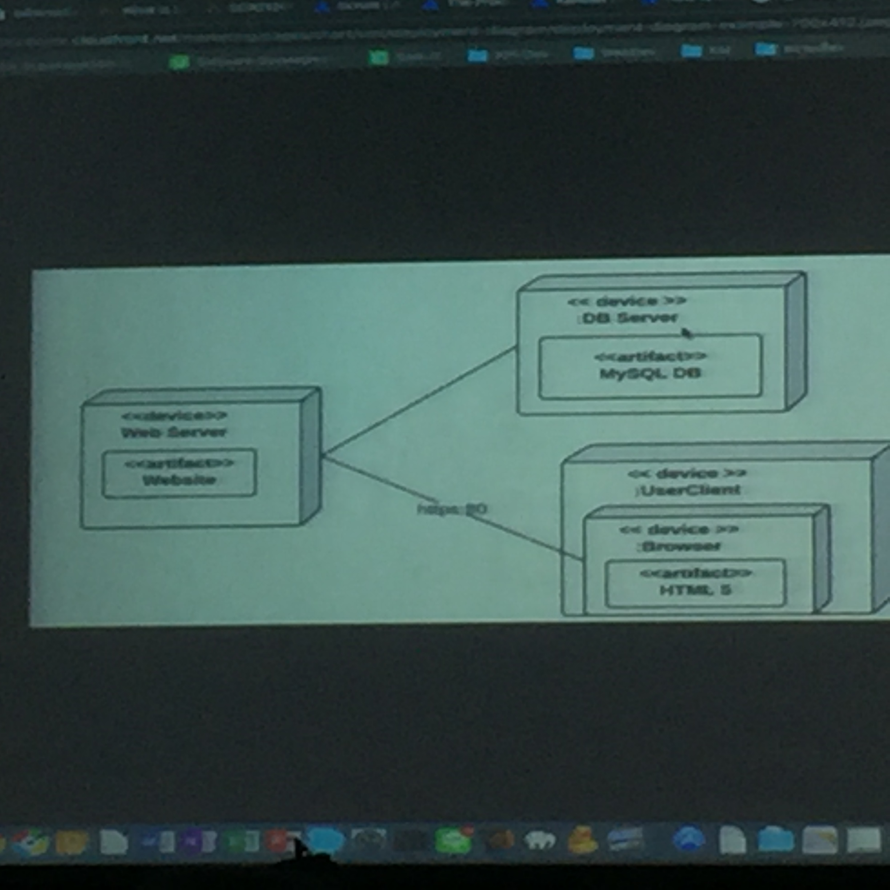

Deployment Diagram
คือ
มันจะบอกว่าโปรแกรมที่เราทำ มันใช้อะไรในการทำงาน
ในโลกของความเป็นจริง พวกตัว server อะไร os อะไร cpu network อะไร ramอะไร
วิธีเขียน
จะมีสัญลัก
- กล่องสี่เหลี่ยม แล้วบอกว่ามันใช้อะไร
ตัวอย่าง

hit
waterfail มันจะเหมือนการสร้างบ้าน ทำรอบเดียว จะเจอปัญหาว่า software ที่ทำมาใช้ไม่ได้
แต่ก็แค่เหมือนกับว่าจะใช้ได้ แต่มันแค่กระดาษแต่พอทำเป็น โปรแกรมจริงๆพัง จึงเกิด SDLC
SDLC ทำหลายๆรอบ ให้ user เห็นความก้าวหน้า มีหลายอันหลายวิธี แต่ยกตัวอย่าง
Agile หลักการคือ Agile mandifesto
(แปลว่า ว่องไว)
SDLC ก็ยังมี Scrum
การ mock คือการทำให้ user เห็นภาพสิ่งที่เค้าต้องการ พวก pototype wirframe
Scrum ทำหลายรอบ แต่ละรอบได้ Software ที่ใช้งานได้จริง
Product owner เข้าของ Product คือ คนที่รู้ความต้องการของ user ว่าเค้าอยากได้อะไร แล้ว list เป็นข้อๆ
ว่าต้องการให้ระบบมันทำอะไรได้บ้าง โดยจัดลำดับความสำคัญของ list ได้ด้วย list นั้น คือ Product backlog
Product backlog
Sprint planning จะมี sprint backlog(แตกเป็นงานย่อยๆ จาก product backlog แตกจาก list 1ข้อนั้นๆ) และต้องบอกได้ด้วยว่า แต่ละข้อต้องใช้เวลาเท่าไหร่
แล้วก็ลงมือทำ จะเกิดการประชุม อะไรทำมากทำน้อยประมานเวลาอะไรใช้เวลาเท่าไหร่ แต่จังหว่ะลงมือทำจะเกิด Dary scrum meeting
Dary scrum meeting คือ ประชุมทุกวัน จะมีคนอยู่ 1 คนชื่อ Scrum master เป็น โคช์ คอยให้คำแนะนำแก้ใขปัญหา(มันประชุมเพื่อถามว่าเมื่อวานทำอะไรไป ติดปัญหาอะไรหรือเปล่า และพรุ่งนี้จะทำอะไรต่อ)
มันไม่ใช่การตามงาน เพราะ ทุกคนเห็นเป้าหลายเดียวกัน ทุกคนบอกว่าจะต้องทำให้มันเสร็จในเวลาเท่ากัน อีกคนติดปัญหาอีกคนต้องเข้าไปช่วย
แต่ Scrum ไม่มีหัวหน้า scrum มีmaster ไว้ เพื่อนช่วยกันบอกให้คนช่วยกัน
หลักการจริงๆ คือ การทำงานเป็นทีม ทีมมีการคุยกัน และทุคนมีความเชื่อที่ว่า Software ที่ทำจะต้องทำเพื่อให้ใช้งานได้จริง เป็นเรื่องของความเชื่อ เน้นๆ อุดมการ
ในจังหว่ะ วางแผน ขั้น 2 จะมีหลายวิธีที่ใช้ได้
เมื่อทำเสร็จจะเกิด Software ที่ใช้งานได้จริง Protentially Shippable product
Sprint Review meeting เป็นการประชุมอีกครั้ง หลัง product ออกมา ดูว่าความต้องการถูกไหม
Retrospective กลับมาทบทวนว่าอะไรที่ดีเอามาใช้ได้ อะไรไม่ดี ก็ จดไว้ไม่ใช้ คือการทบทวน คล้ายๆ PDCA (plan do chack at) = อะไรดีก็ไม่ใช้อะไรไม่ดีก็ไม่ใช้เอามาปลับปรุงตัวเอง
ตอน meeting ยืนคุย เมื่ยจะได้รีบกลับไปทำงานเดียวนาน การ meeting ไม่ใช่การแก้ปัญหา แต่เป็นการเอาปัญหามากบอก
meeting จะมี to do กับ done(เสร็จแล้ว)แต่เสร็จแต่ใหนคือเสร็จ software ถ้าทำแล้วไม่ส่งให้ user ใช้ก็เหมือนไม่ได้ทำ
KPI
Key
Performance Indicator
KPI
คือ เครื่องมือที่ใช้วัดผลการด าเนินงานหรื
อประเมินผลการด าเนินงานในด้านต่างๆ
จะมีความผิดพลาดในการส่ง software ของ programer ต้องข้อนข้างน้อย
ใครทำใครได้
ถ้าเราไม่ทำเพราะคิดว่าเสียเปรี่ยบ หัวหน้าเค้าเห็นแค่ว่าลูกน้องทำงานหรือไม่
เราไม่ทำก็ไม่ได้งาน
คิดแบบนี้ก็เป็นทุกข์ เห็นคนใหนไม่เก่งก็ เข้าไปช่วยให้เค้าดีขึ้น ก็ทำให้ทีมดีขึ้น
หลังสือ KEEP LEARNING
somkiet.cc
หนังสือ สิ่งที่นักพัฒนา software ควรใช้ 20 อย่าง
ของบางอย่างต้องลองทำ ไม่ลองทำ ก็ทำไม่ได้
ผมเป็น footer ครับ /อันติอาจาร/คนแพ้มองแต่ปัญหา คนชนะมองหาทางออก
{kind=link}
{kind=link}